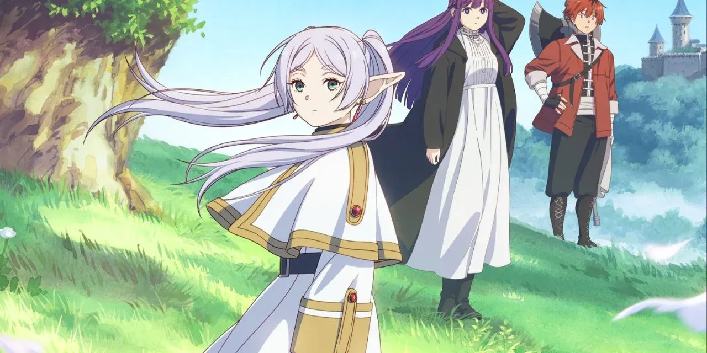

Welcome to the World of Frieren
"Frieren: Beyond Journey's End" is a captivating anime/manga series that follows the journey of Frieren, an elven mage who was part of the legendary hero's party that defeated the Demon King. After the victory, while her companions age and pass on, Frieren embarks on a profound journey of self-discovery, exploring the meaning of life, friendship, and the human condition.
